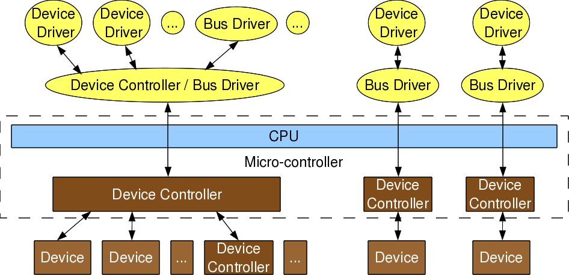

Linux Device Drivers for your Girl Friend
This is the first article of the series on Linux device drivers, which aims to present the usually technical topic in a way that is more interesting to a wider cross-section of readers.
“After a week of hard work, we finally got our driver working”, was the first line as Pugs met his girl friend Shweta.
“Why? What was your driver upto? Was he sick? And what hard work did you do?”, came a series of question from Shweta with a naughty smile.
Pugs was confused as what was Shweta talking about. “Which driver are you talking about?”, he exclaimed.
“Why are you asking me? You should tell me, which of your drivers, you are talking about?”, replied Shweta.
Pugs clicked, “Ah C’mon! Not my car drivers. I am talking about my device driver written on my computer.”
“I know a car driver, a bus driver, a pilot, a screw driver. But what is this device driver?”, queried Shweta.
And that was all needed to trigger Pugs’ passion to explain the concept of device drivers for a newbie. In particular, the Linux device drivers, which he had been working on since many years.
Of drivers and buses
A driver is one who drives – manages, controls, directs, monitors – the entity under his command. So a bus driver does that with a bus. Similarly, a device driver does that with a device. A device could be any peripheral connected to a computer, for example mouse, keyboard, screen / monitor, hard disk, camera, clock, … – you name it.
A pilot could be a person or automatic systems, possibly monitored by a person. Similarly, device driver could be a piece of software or another peripheral / device, possibly driven by a software. However, if it is an another peripheral / device, it is referred as device controller in the common parlance. And by driver, we only mean the software driver. A device controller is a device itself and hence many a times it also needs a driver, commonly referred as a bus driver.
General examples of device controllers include hard disk controllers, display controllers, audio controller for the corresponding devices. More technical examples would be the controllers for the hardware protocols, such as an IDE controller, PCI controller, USB controller, SPI controller, I2C controller, etc. Pictorially, this whole concept can be depicted as in figure 1.

Device controllers are typically connected to the CPU through their respectively named buses (collection of physical lines), for example pci bus, ide bus, etc. In today’s embedded world, we more often come across microcontrollers than CPUs, which are nothing but CPU + various device controllers built onto a single chip. This effective embedding of device controllers primarily reduces cost & space, making it suitable for embedded systems. In such cases, the buses are integrated into the chip itself. Does this change anything on the drivers or more generically software front?
Not much except that the bus drivers corresponding to the embedded device controllers, are now developed under the architecture-specific umbrella.
Drivers have two parts
Bus drivers provides hardware-specific interface for the corresponding hardware protocols, and are the bottom-most horizontal software layers of an operating system (OS). Over these sit the actual device’ drivers. These operate on the underlying devices using the horizontal layer interfaces, and hence are device-specific. However, the whole idea of writing these drivers is to provide an abstraction to the user. And so on the other end, these do provide interface to the user. This interface varies from OS to OS. In short, a device driver has two parts: i) Device-specific, and ii) OS-specific. Refer to figure 2.

The device-specific portion of a device driver remains same across all operating systems, and is more of understanding and decoding of the device data sheets, than of software programming. A data sheet for a device is a document with technical details of the device, including its operation, performance, programming, etc. Later, I shall show some examples of decoding data sheets as well. However, the OS-specific portion is the one which is tightly coupled with the OS mechanisms of user interfaces. This is the one which differentiates a Linux device driver from a Windows device driver from a MAC device driver.
Verticals
In Linux, a device driver provides a system call interface to the user. And, this is the boundary line between the so-called kernel space and user space of Linux, as shown in figure 2. Figure 3 elaborates on further classification.
Based on the OS-specific interface of a driver, in Linux a driver is broadly classified into 3 verticals:
- Packet-oriented or Network vertical
- Block-oriented or Storage vertical
- Byte-oriented or Character vertical

The other two verticals, loosely the CPU vertical and memory vertical put together with the other three verticals give the complete overview of the Linux kernel, like any text book definition of an OS: “An OS does 5 managements namely: CPU/process, memory, network, storage, device/io”. Though these 2 could be classified as device drivers, where CPU & memory are the respective devices, these two are treated differently for many reasons.
These are the core functionalities of any OS, be it micro or monolithic kernel. More often than not, adding code in these areas is mainly a Linux porting effort, typically for a new CPU or architecture. Moreover, the code in these two verticals cannot be loaded or unloaded on the fly, unlike the other three verticals. And henceforth to talk about Linux device drivers, we would mean to talk only on the later three verticals in figure 3.
Let’s get a little deeper into these three verticals. Network consists of 2 parts: i) Network protocol stack, and ii) Network interface card (NIC) or simply network device drivers, which could be for ethernet, wifi, or any other network horizontals. Storage again consists of 2 parts: i) File system drivers for decoding the various formats on various partitions, and ii) Block device drivers for various storage (hardware) protocols, that is the horizontals like IDE, SCSI, MTD, etc.
With this you may wonder, is that the only set of devices for which you need drivers, or Linux has drivers for. Just hold on. You definitely need drivers for the whole lot of devices interfacing with a system, and Linux do have drivers for them. However, their byte-oriented accessibility puts all of them under the character vertical – yes I mean it – it is the majority bucket. In fact, because of this vastness, character drivers have got further sub-classified. So, you have tty drivers, input drivers, console drivers, framebuffer drivers, sound drivers, etc. And the typical horizontals here would be RS232, PS/2, VGA, I2C, I2S, SPI, etc.
Multiple-vertical interfacing drivers
On a final note on the complete picture of placement of all the drivers in the Linux driver ecosystem, the horizontals like USB, PCI, etc span below multiple verticals. Why? As we have a USB wifi dongle, a USB pen drive, as well as a USB to serial converter – all USB but three different verticals.
In Linux, bus drivers or the horizontals, are often split into two parts, or even two drivers: i) Device controller specific, and ii) An abstraction layer over that for the verticals to interface, commonly called cores. A classical example would be the usb controller drivers ohci, ehci, etc and the USB abstraction usbcore.
Summing up
So, to conclude a device driver is a piece of software which drives a device, though there are so many classifications. And in case it drives only another piece of software, we call it just a driver. Examples are file system drivers, usbcore, etc. Hence, all device drivers are drivers but all drivers are not device drivers.
“Hey Pugs! Just hold on. We are getting late for our class. And you know what kind of trouble, we can get into. Let’s continue from here, tomorrow.”, exclaimed Shweta.
With that Pugs wrapped up saying, “Okay. This is majorly what the device driver theory is. If you are interested, later I shall show you the code & what all have we been doing for all the various kinds of drivers”. And they hurried towards their classroom.